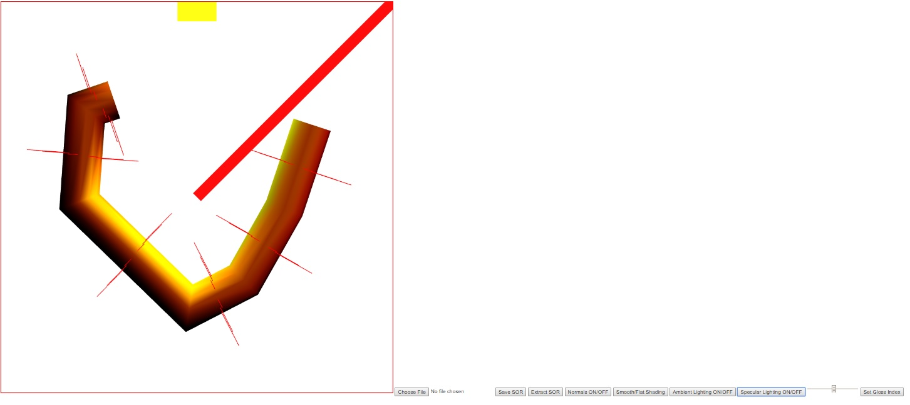

Name: Stephen Woodbury
Student ID: 1429496 : swoodbur
Submission For: Lab3
Date: 11/5/2017
Files Included: WoodburyStephenLab3Features.html, WoodburyStephenLab3Driver.html, WoodburyStephenLab3Driver.js, WoodburyStephenLab3Output.jpg
Assignment Details: Take Prog2, add a second light source to the scene, enable light source picking and perspective changing
Additional Features: None
Notes: I had troubles with this lab, I need to modularize my code for scalability. That being said, I've gotten everything but perspective changing to perform as specified. Ie, I've succeeded in adding two light sources, light picking, and dimensions changing. I just didn't succeed in changing to perspective viewing. I tried working with the functions given, I couldn't get anything to show on the screen
WoodburyStephenLab3Output: Ambient+Diffuse Light+Specular Lighting Both Sources + Normals; Smooth Shading
Link to Driver : WoodburyStephenLab3Driver.html